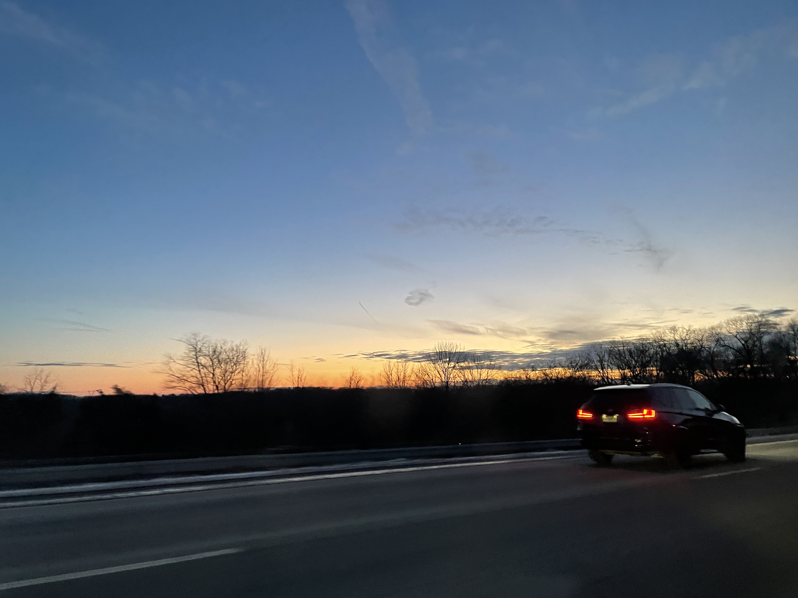
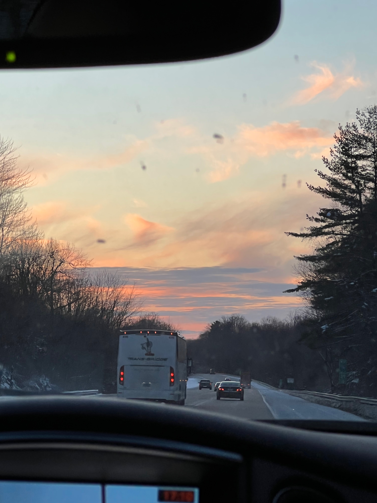

Pretty Skies
in New Jersey
In New York City, it is hard to see sunsets and the sky fully.
When I go back home, every sunset or sky in general is more special
and I appreciate them more as I do not see them very often in the city.



